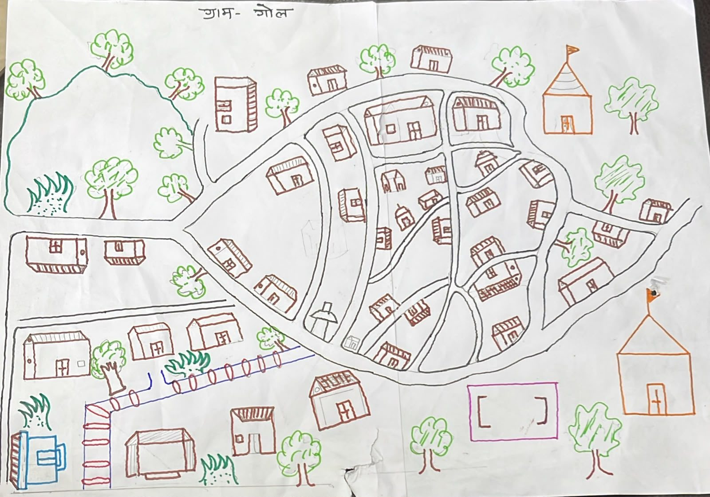
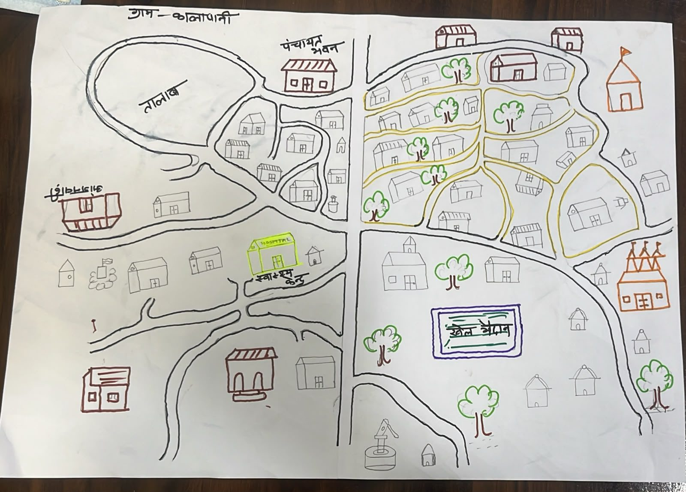
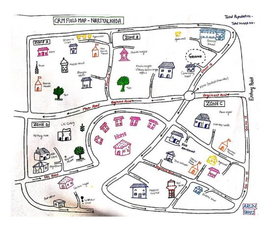
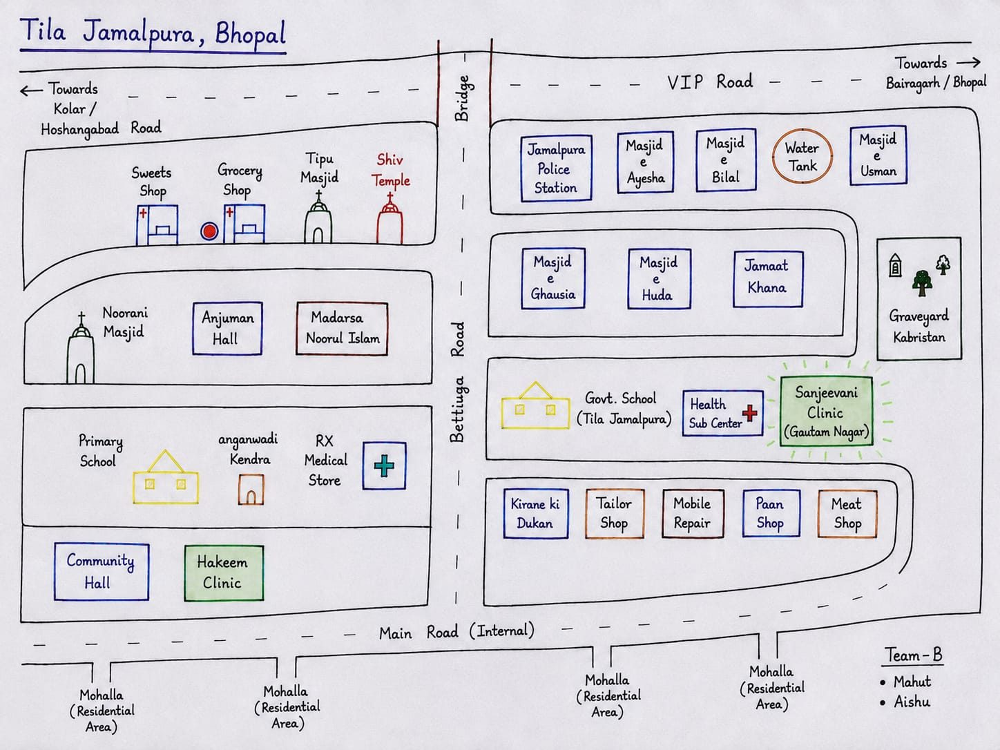
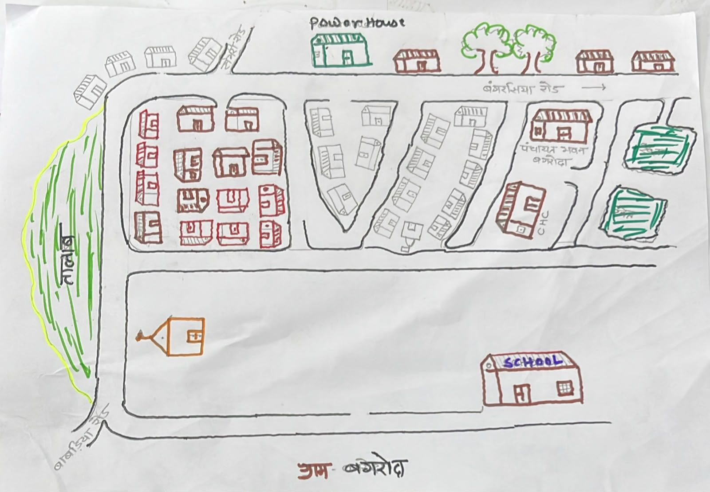

Segmenting is the first thing you do in every cluster, before any household is chosen. Here you will see it done on real village sketches, one step at a time.
Census 2011: 131 households
3 segments
Still 3 segments, of about 35 households each
Still 3 segments, of about 60 households each
Not the same area. A crowded lane and a spread-out tola can each be one segment.
A road, lane, nala, field edge or wall. Never an imaginary line through the middle of houses.
All its houses are joined together, not two scattered patches.
Both of you and the guide can point to any house and say whether it is in the segment or not.
Most mistakes come from drawing segment lines before counting. Count first, then draw.

This is a real sketch drawn by a field team. It shows the roads and lanes, the temples, the playground, trees and the houses.
Each house symbol stands for a group of houses. The household counts in this example are made up for teaching.
Walk the whole boundary with the ASHA or AWW. Ask: where does the village end?
Include the far houses: by the temple, at the end of the road, near the fields, across the nala. They are part of the village.
Draw the roads and lanes clearly. They will become your block and segment boundaries.
The roads and lanes already cut Gol into 9 blocks. Give each one a letter, a to i.
A block is a piece you can walk all the way round.
Ask the ASHA, who knows each lane, then walk past quickly to check. A rough count is enough here.
Segment 1 = a + b = 12 + 38 = 50
Segment 2 = c + d + e = 9 + 17 + 22 = 48
Segment 3 = f + g = 44 + 9 = 53
Segment 4 = h + i = 31 + 19 = 50
Start at one end of the village and add neighbouring blocks until you reach about 50. Then start the next segment.
Each slip has the same chance. In the next slide, slip 3 was drawn.
In F4, enter:
Agree one route with the guide that passes every household in the segment.
Chalk 1, 2, 3 … on every door along the route, including locked and empty-looking houses. Here: 53 households.
Toss the coin for List A or B and visit only the listed numbers (List A shown: about 3 in every 4).
A village with dense lanes and scattered houses, a large urban ward, and a sketch that cannot be segmented yet.

Segment 1 · 52: the whole west side. Large, but houses are spread out.
Segment 2 · 49: the tight lanes in the north-east.
Segment 3 · 50: the southern lanes and the east side.


What it shows: roads, shops, masjids, a school, clinics. A neat map for finding your way.
What is missing: where people live. The mohallas are only labels at the bottom, with no houses and no counts.
✗ Changing the number of segments
✓ Make exactly what F4 shows; call before changing
✗ Equal area instead of equal households
✓ Count each block first, then join blocks
✗ Lines through the middle of houses
✓ Use roads, lanes, nala, field edges, walls
✗ Leaving out far houses or a tola
✓ Walk the whole boundary with the guide first
✗ Choosing the easy segment, or letting the guide choose
✓ Draw by slips, in front of the guide
✗ Counting buildings
✓ Count households: people who share one kitchen

Work it out on paper before the answer is shown.
One good answer:
Segment 1: 41 + 8 = 49
Segment 2: 21 + 25 = 46
Segment 3: 22 + 12 + 8 = 42
Other answers are fine if they pass the four checks.
Take a screenshot of this slide and keep it on your phone.
Sketch maps: ENABLE-2 community field teams, Department of Community and Family Medicine, AIIMS Bhopal (Nariyalkheda map by Arun Sahu). Used with thanks.
Household counts in all examples are made up for teaching and are not the real counts of these villages.
Method: WHO coverage evaluation survey field manual (2019), box 1.3 and section 2.1; NDD CES MP 2026 Manual 1: Survey teams, pages 14–15; form F4 v1.1.